이 문서는 법퍼링 법전의 사용지원을 위한 문서입니다.
면책
법퍼링 법전(이하 “당해 앱“이라고 합니다)은 국가법령정보센터 (https://law.go.kr) 이용의 편의를 제공하기 위해 무료로 제공되는 앱으로 내용의 오류, 또는 처리 과정에서의 오류가 존재할 수 있습니다.
⚠️ 당해 앱은 위 오류 등을 포함하여 법령 정보에 관한 내용 및 이 앱을 사용하며 발생하는 문제에 관하여 어떤 책임도 지지 않습니다.
⇒ 이 내용은 [즐겨찾기] 탭의 (?) 아이콘을 클릭하여 다시 볼 수 있습니다
목차
1. 사용 안내
가. 하단 탭 버튼
당해 앱의 탭은 즐겨찾기, 둘러 보기, 보기, 법령 검색으로 구성되어 있습니다. 보기 탭에서는 법령 검색 등에서 찾은 법령을 열람할 수 있고, 즐겨찾기에서는 보기 탭에서 즐겨찾기에 추가한 법령 또는 조문을 조회할 수 있습니다.
둘러보기에서는 일반적으로 많이 사용되는 법령을 빠르고 쉽게 찾을 수 있도록 제시하였습니다.
나. 보기 탭
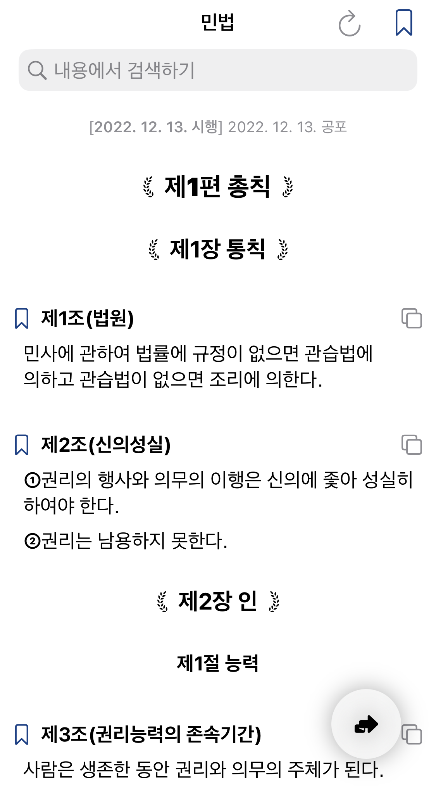-
상단의 즐겨찾기 버튼은 법령 전체를 즐겨찾기에 등록하고, 조문 제목 앞의 즐겨찾기 버튼은 해당 조문을 즐겨찾기에 등록합니다.
-
상단의 목차보기 버튼은 아래와 같이 법령의 목차(편제 등)를 보여줍니다.
-
판례보기 버튼은 해당 조문과 연관된 판례를 새 창에서 보여줍니다.
-
조문의 복사하기 버튼은 해당 조문의 전체 내용을 클립보드에 복사하는 버튼입니다. 한편, 개별 항목(가령 “①”)을 더블탭할 시에는 해당 항목의 내용만이 복사됩니다.
-
법령의 개정이 있는 경우에는 내용을 자동으로 불러옵니다.
-
법령을 강제로 새로고침하기 위해서는 (Safari에서 새로고침을 하는 것과 마찬가지로), 화면을 돌아가는 회색 원이 나올 때까지 아래로 화면을 잡아당깁니다(아래 그림 참고).
-
회색 바탕으로 표시된 참조조문을 탭할 시에는, 하단에 연한 회색 상자가 나타나며 해당 참조조문이 표시됩니다.
-
참조조문 상자에서 표시된 첫 번째 복사하기 버튼()은 해당 참조조문만을 복사하고, 두 번째 복사하기 버튼()은 해당 참조조문에 이르기까지 경로에 있는 모든 조문들을 복사합니다.
- 조문 내에서의 밑줄은 괄호 내의 정의조항을 알아보기 쉽게 표시한 것입니다.
다. 검색 탭
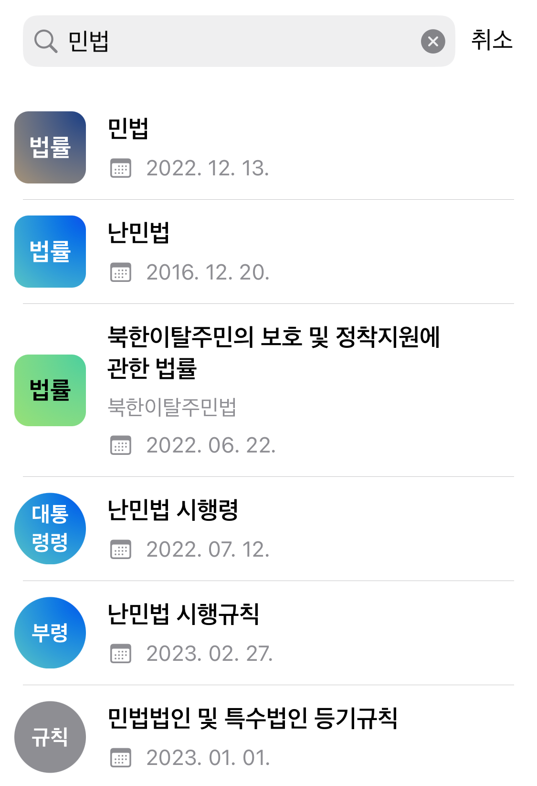-
검색 탭 상단의 입력창을 통해 현행 법령을 검색할 수 있습니다
-
같은 계열의 법령(가령, 난민법 - 난민법 시행령 …)은 같은 고유색깔로 표시됩니다.
-
법령은 모서리가 둥근 사각형, 나머지는 원형으로 표시됩니다.
-
검색 내용의 날짜는 시행일입니다.
-
공식적인 약칭이 있는 경우 함께 표시됩니다.
라. 즐겨찾기 탭
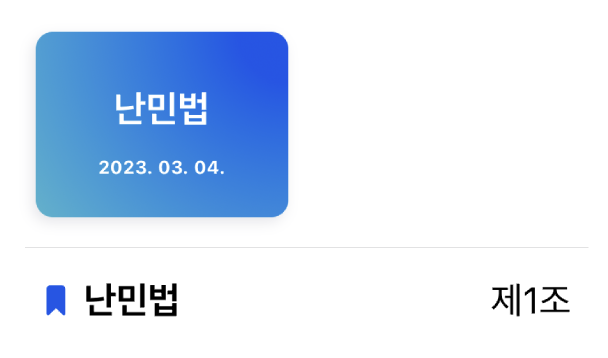-
상단의 항목은 법령에 대한 즐겨찾기를, 하단의 항목은 조문에 대한 즐겨찾기를 나타냅니다.
-
조문 즐겨찾기를 삭제하기 위해서는 조문 앞의 책갈피 기호를 탭하면 삭제됩니다.
- 법령을 잠시 누르고 있는 경우, 공유하기 및 지우기 실행 버튼이 나타납니다.
- 조문 항목을 잠시 누르고 있는 경우 지우기 버튼이 나타나고, 세부 내용을 볼 수 있습니다.
마. 둘러보기 탭
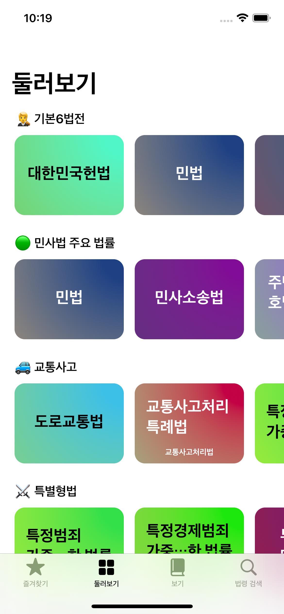- 각종 유용한 법령을 모아둔 탭입니다. 업데이트에 따라 내용이 달라질 수 있습니다. 추가하고 싶으신 법령이 있다면 언제든지 아래 연락처로 연락주세요!
바. 글자크기 키우기
- 앱의 글자 크기를 키우고 싶으시다면(iOS, ipadOS 한정) 아래 설정을 진행하시면 됩니다.
[1] 홈 화면으로 나가서, 설정 앱의 손쉬운 사용에 들어갑니다.
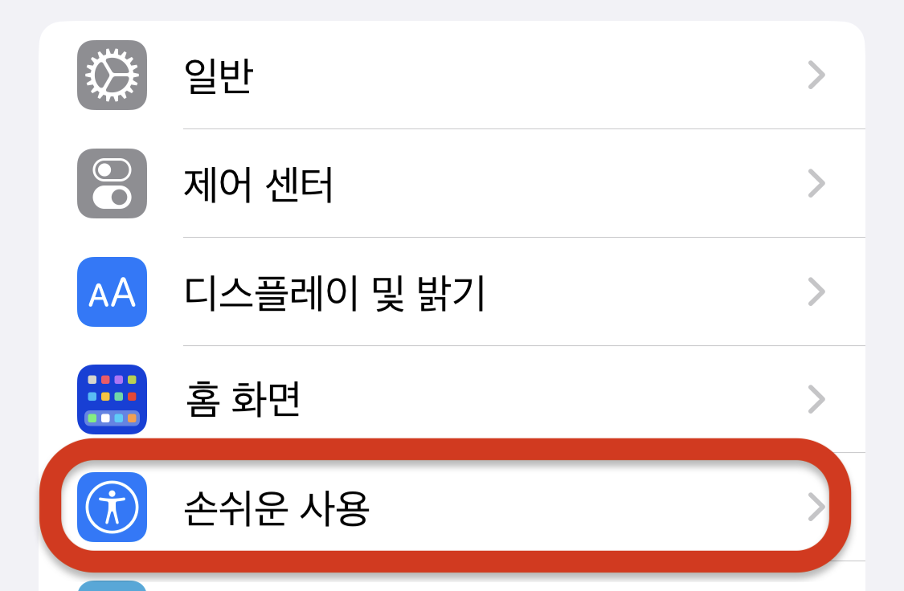[2] 일반 아래 앱별 설정을 찾아 들어갑니다.
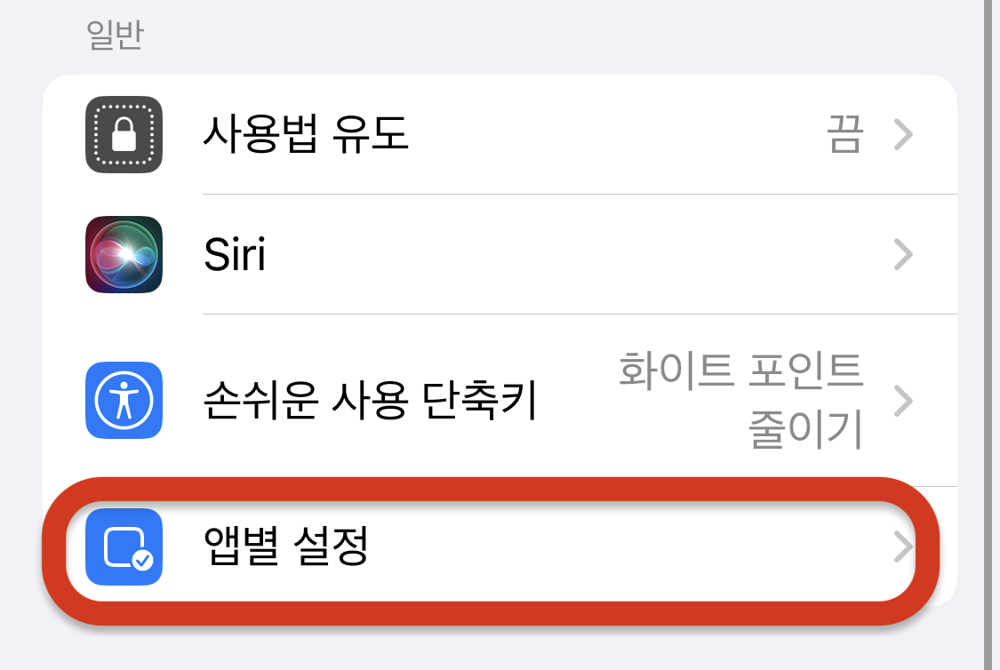[3] 앱별 설정에서 앱 추가를 선택한 뒤, 법퍼링 법전을 선택합니다.
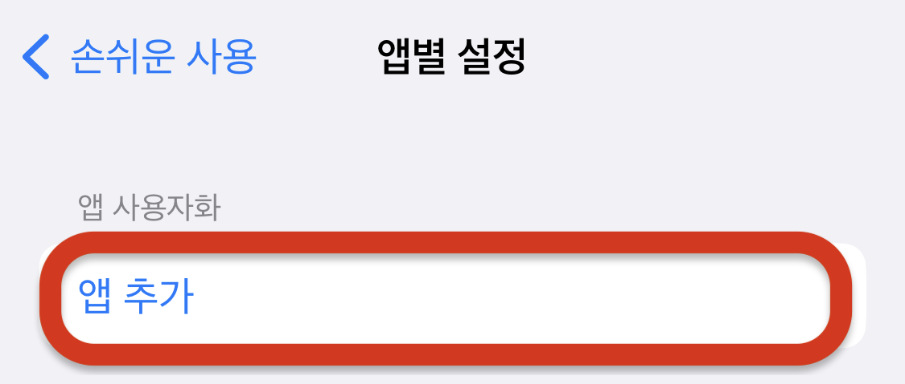 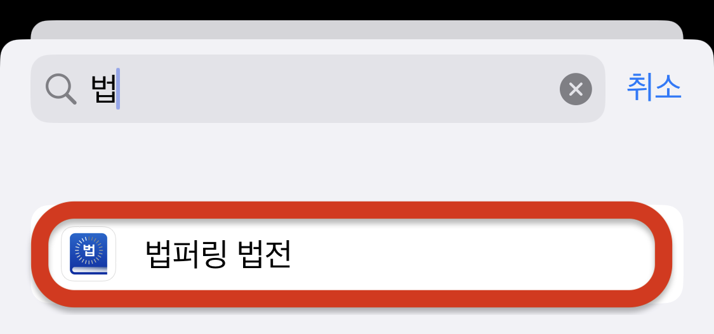 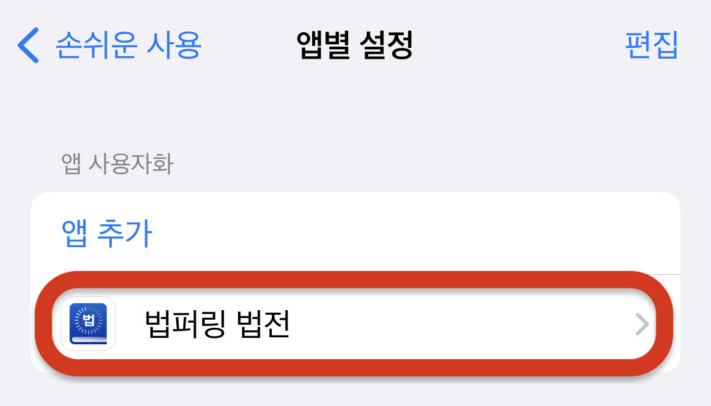[4] 법퍼링 법전 항목을 선택 후 나타나는 창에서, 더 큰 텍스트를 선택한 뒤, 아래의 슬라이드를 보기 좋은 크기로 드래그합니다(끝).
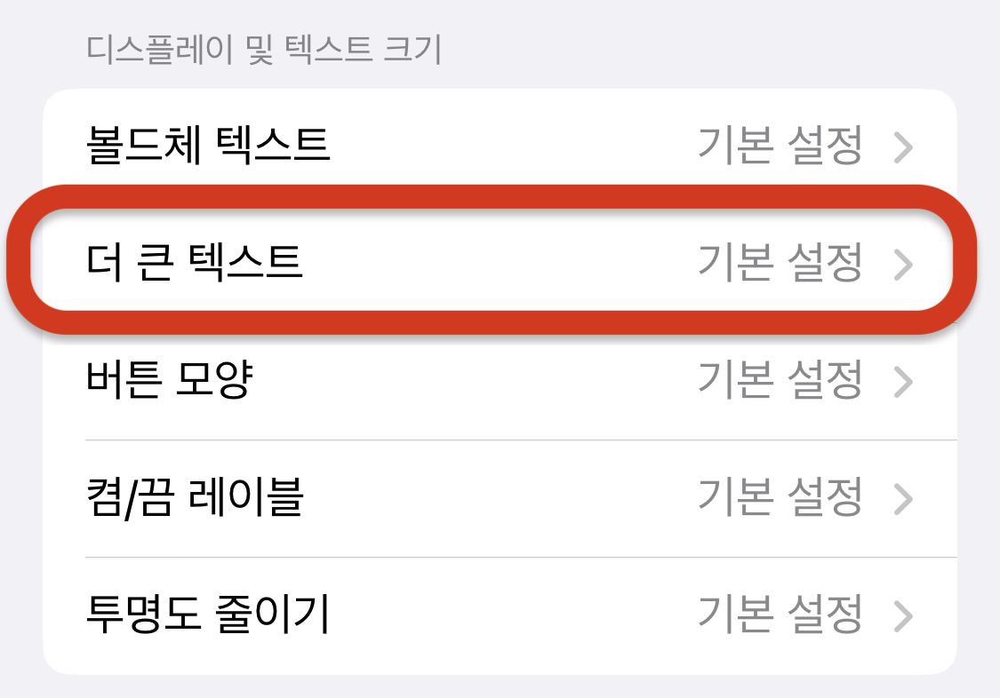 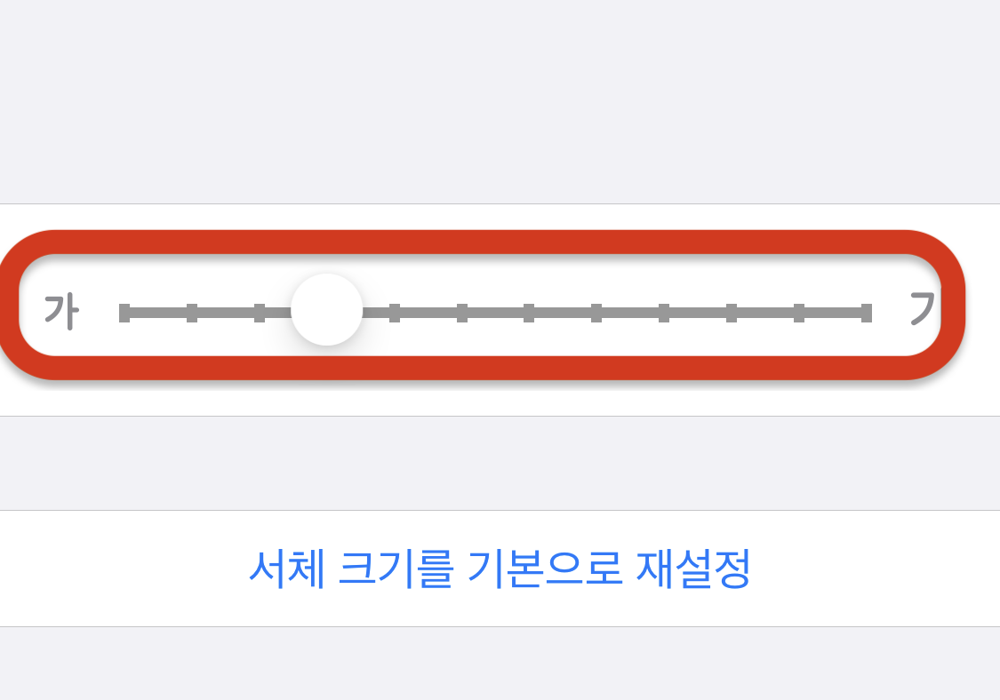2. 연락처
3. 외부라이브러리 및 라이센스
작명 도움: MIJI
SQLite.swift Copyright [2014-2015] Stephen Celis. [🔗] (하단 Sqlite.swift 라이센스 참조)
SwiftSoup Copyright [2016] Nabil Chatbi. [🔗] (하단 SwiftSoup 라이센스 참조)
Sqlite.swift 라이센스
(The MIT License)
Copyright (c) 2014-2015 Stephen Celis (<stephen@stephencelis.com>)
Permission is hereby granted, free of charge, to any person obtaining a copy
of this software and associated documentation files (the "Software"), to deal
in the Software without restriction, including without limitation the rights
to use, copy, modify, merge, publish, distribute, sublicense, and/or sell
copies of the Software, and to permit persons to whom the Software is
furnished to do so, subject to the following conditions:
The above copyright notice and this permission notice shall be included in all
copies or substantial portions of the Software.
THE SOFTWARE IS PROVIDED "AS IS", WITHOUT WARRANTY OF ANY KIND, EXPRESS OR
IMPLIED, INCLUDING BUT NOT LIMITED TO THE WARRANTIES OF MERCHANTABILITY,
FITNESS FOR A PARTICULAR PURPOSE AND NONINFRINGEMENT. IN NO EVENT SHALL THE
AUTHORS OR COPYRIGHT HOLDERS BE LIABLE FOR ANY CLAIM, DAMAGES OR OTHER
LIABILITY, WHETHER IN AN ACTION OF CONTRACT, TORT OR OTHERWISE, ARISING FROM,
OUT OF OR IN CONNECTION WITH THE SOFTWARE OR THE USE OR OTHER DEALINGS IN THE
SOFTWARE.
SwiftSoup 라이센스
MIT License
Copyright (c) 2016 Nabil Chatbi
Permission is hereby granted, free of charge, to any person obtaining a copy
of this software and associated documentation files (the "Software"), to deal
in the Software without restriction, including without limitation the rights
to use, copy, modify, merge, publish, distribute, sublicense, and/or sell
copies of the Software, and to permit persons to whom the Software is
furnished to do so, subject to the following conditions:
The above copyright notice and this permission notice shall be included in all
copies or substantial portions of the Software.
THE SOFTWARE IS PROVIDED "AS IS", WITHOUT WARRANTY OF ANY KIND, EXPRESS OR
IMPLIED, INCLUDING BUT NOT LIMITED TO THE WARRANTIES OF MERCHANTABILITY,
FITNESS FOR A PARTICULAR PURPOSE AND NONINFRINGEMENT. IN NO EVENT SHALL THE
AUTHORS OR COPYRIGHT HOLDERS BE LIABLE FOR ANY CLAIM, DAMAGES OR OTHER
LIABILITY, WHETHER IN AN ACTION OF CONTRACT, TORT OR OTHERWISE, ARISING FROM,
OUT OF OR IN CONNECTION WITH THE SOFTWARE OR THE USE OR OTHER DEALINGS IN THE
SOFTWARE.